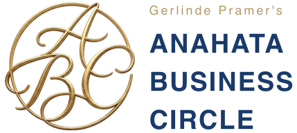

Ein neues Format für Unternehmer:innen und Führungskräfte, die mehr suchen als nur das nächste Tool. Ein Raum, den es so in Wien, Linz und Graz noch nicht gegeben hat.
Wer ein Unternehmen führt, trägt vieles allein. Nicht, weil niemand da wäre – sondern weil selten jemand fragt, wie es wirklich ist. Genau dafür habe ich den Anahata Business Circle geschaffen: einen Ort, an dem das möglich wird.
Kein Networking-Abend im klassischen Sinn und kein Vortrag von der Bühne herab. Sondern eine kleine Runde von Unternehmer:innen, mit denen ich mich ehrlich austausche.
Unternehmer:innen und Führungskräfte sind es gewohnt, Antworten zu geben – Mitarbeitenden, Kund:innen, sich selbst. Im Anahata Business Circle drehe ich das um: ein Abend, an dem Fragen Raum bekommen, die im Alltag selten gestellt werden. Kein Frontalvortrag, kein Verkaufsgespräch – sondern ein geschützter Rahmen für echten Austausch.
Der Name ist Programm: Anahata steht für das Herzzentrum, den Ort innerer Verbindung. Business Circle für den Kreis von Menschen, die sich auf Augenhöhe begegnen – jenseits von Hierarchie und Statussymbolen. Ich lade bewusst nur zehn bis zwanzig Personen pro Abend ein, damit aus einer Begegnung ein echtes Gespräch werden kann.
Zwei bis zweieinhalb Stunden, eine kleine Runde, ein fester Rhythmus – jeder Abend folgt derselben Grundstruktur, unabhängig vom jeweiligen Monatsthema.
Kein Frontalvortrag, kein starres Programm – sondern vier Phasen, die einander Raum geben: ankommen, zuhören, sprechen, nachwirken lassen.
Termine ansehenDer Abend
Der Alltag bleibt an der Tür. Ein kurzer Moment zum Ankommen, bevor der Abend beginnt.
Mag. Gerlinde Pramer setzt einen Impuls zum Thema des Abends: persönlich, konkret, ohne Coaching-Floskeln.
In kleinen Gruppen wird der Impuls zur eigenen Frage – und aus Zuhören wird Gespräch.
Danach offenes Beisammensein – hier entstehen die Gespräche, für die im Alltag selten Zeit bleibt.
Die monatlichen Termine finden jeweils an drei aufeinanderfolgenden Tagen in Linz, Wien und Graz statt – mit einem eigenen Monatsthema. Doch bestimmte Fragen begleiten das Format immer wieder. Eine Auswahl:
Wer sind Sie, wenn die Rolle der souveränen Führungskraft einmal abgelegt ist?
Wenn Kopf und Bauch sich widersprechen: wie gute Entscheidungen wirklich entstehen.
Sich selbst vertrauen – in Zeiten von Unsicherheit, Druck und zu vielen Meinungen.
Warum Menschen bleiben oder gehen – und warum es selten nur ums Geld geht.
Wer an der Spitze steht, trägt oft allein. Was sich verändert, wenn geteilt wird.

Für wen ist der Anahata Business Circle gedacht?
Für Unternehmer:innen, Führungskräfte und alle, die spüren, dass mehr da ist als die nächste Kennzahl. Vorerfahrung mit Coaching oder Bewusstseinsarbeit brauchen Sie nicht – nur Offenheit.
Ist das Coaching oder Therapie?
Nein. Der Circle ersetzt keine Einzelbegleitung und ist kein Therapieersatz. Es ist ein Gesprächsformat unter Unternehmer:innen. Wer tiefer gehen möchte, findet das passende Format in der 1:1 Begleitung.
Wie viele Personen nehmen teil?
Wir halten die Runde bewusst klein – rund 10 bis 20 Personen pro Abend, damit echte Gespräche statt Small Talk entstehen. Ein Abend findet ab mindestens 5 Teilnehmer:innen statt.
Wo und wann finden die Abende statt?
In Linz, Wien und Graz, mehrmals im Jahr an je drei aufeinanderfolgenden Tagen mit wechselndem Monatsthema. Alle aktuellen Termine und die Anmeldung finden Sie auf der Terminseite.
Weitere Informationen und Hintergründe zum Anahata Business Circle – sowie die Möglichkeit zur Anmeldung – gibt es auch auf der eigenen Website des Formats, die sich in einem neuen Tab öffnet.
abc.pramer.com